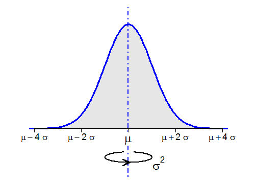
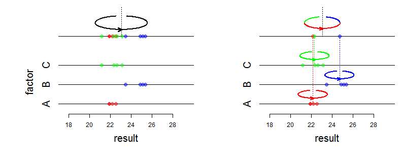
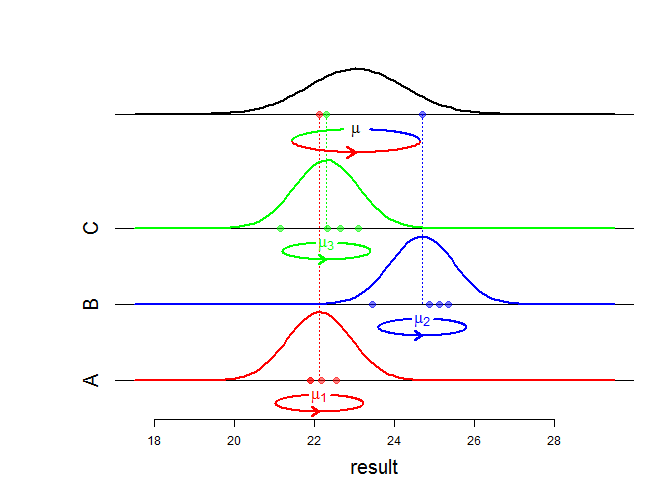

-
Schematizing the variance as a moment of inertia
2013-10-06
SourceIn order to make a presentation, I was wondering how to display the variance of a distribution or the variance of a sample on a graphic. Finally, I've found this solution:

What is this "ellipse" with an arrow ? This is a picture commonly used in classical mechanics to represent the moment of inertia of a body spinning around an axis of rotation. The variance of a distribution has an interpretation as a moment of inertia: the body is a very thin sheet of metal whose shape is the area under the graph of the density and whose mass is \(1\), and the axis of rotation is the vertical axis through the mean of the distribution. Thus the variance measures how hard it is to spin this metal sheet. Under this interpretation, the standard deviation is termed as gyroscopic radius, or radius of gyration, of the metal sheet.
Drawing the ellipse in R
I have written my own function
inertia()to draw this picture. Its main arguments are shown in the following figure (made with R and then converted to a TikZ LaTeX picture with the awesome tikzDevice package):inertia(x0, y0, a, b, r, l, d, s, w)It appears you don't have a PDF plugin for this browser. No biggie... you can click here to download the PDF file.
Application: decomposition of variance
As shown in the first figure, the ellipse is useful to display the variance of a theoretical distribution. In my presentation, I have also used it to explain the decomposition of the sample variance:

And I have also used the moment of inertia representation to explain the one-way random effect ANOVA model, which is commonly used to model the decomposition of variance:

- Home
- About
- PoirotReproducible Blogging with R Markdown
- SlidifyReproducible html5 slides from R markdown
- R-bloggersBlog posts about R, contributed by R bloggers worldwide.
- stla.overblogMy previous blog
- Timely Portfolio A great blog about R, Javascript, and more